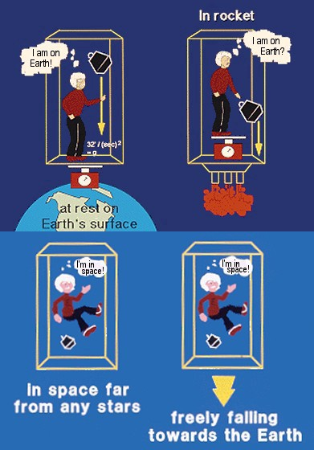

Thoughts of a biologist about the problem of physics
This post is about my thoughts on the nature of mass.
The problem of physics
As many people know, the biggest problem of modern physics is that there are two powerfull theories, relativity and quantum mechanics, but that they are not yet able to merge together into a coherent and unified theory that explain both gravity and the microscopic world of particles.
Some of the symptoms of the disease of physics (the lack of a unified theory) can be seen in aspects such as the Lorentz factor, a mathematical expression that appears frequently in relativity:
\[ \frac{1}{\sqrt{1 - \frac{v^2}{c^2}}}, \]
where \(v\) is the velocity of a given object and \(c\) is the speed of light.
This factor appears in the denominator of equations such as that of relativistic momentum:
\[ p = \frac{m_0 v}{\sqrt{1 - \frac{v^2}{c^2}}}, \]
where \(m_0\) is the rest mass (i. e., the mass of the object when it is not moving).
We can see that when this equation is applied to massive objects moving at lower speed than light, it gives an answer according to the theory of relativity, and the Lorentz factor is close to 1 when the speed of the object is very small compared to the speed of ligth, giving a value very similar to the momentum in classical mechanics: \(p = m v\).
However, if we want to know the momentum of light by using this equation, the Lorentz factor becomes zero and we end up with a mathematical indetermination. This is not a big problem, as we can calculate the momentum of a photon very easily by other means, for example with the equation \(p = \frac{h}{\lambda}\), where \(h\) is the Planck constant and \(\lambda\) is the photon wavelength.
Why then we should worry about the indetermination in the equation of the relativistic momentum? Because it shows that moderns theories are incomplete. A good and solid theory should give only one consistent equation that gives the correct answer for the momentum of anything, without making distinctions between photons and other kind of particles.
Mass is a heavy topic
As it turns out, it seems that the answer to the problem of the modern physics lies in solving an apparently simple question: What exactly is the mass? Why some particles have mass and other don’t?
As Einstein found out, mass has a strong connection with energy, which is reflected in the most famous equation of physics:
\[ E = m c^2 \]
However, thinking more profoundly about some questions, it seems to me that mass has a very strong connection with a specific kind of energy: Kinetic energy. And in the next lines I will expose why I think mass and movement are closely related.
Gravity and acceleration
Let’s think in a famous mental experiment (Gedankenexperiment). We will imagine we wake up in a super high technology spaceship equipped with all sort of equipment for experimental physics. When we wake up, we notice that there is a force keeping the objects fixed to the ground. The question is, how can we know if the spaceship is still on earth or if it is accelerating through space? As physicists know, there is no way, not even with the most advanced equipment, to know if the force keeping you on the ground is caused by a gravitational field or if it is caused by accelerated movement. This is known as the Equivalence Principle. My question is: If there is no way to distinguish gravity from accelerated movement, why do we consider them as different things? Can be gravity or mass just an special form of movement? Or perhaps movement can be considered as a special form of mass?

Don’t stop me now
What I think is another manifestation of the underlying connection between mass and movement is the fact that massless particles (such as photons of light) are unstopable, they are constantly moving around, while particles with mass are “stopable” and are easier to move if they have less mass.
This seems to me as it there were a law of conservation. If we consider mass as a kind of movement, it would seem like every particle had to possess a basal amount of movement, in some of them manifesting as mass.
The stuff exposed above is just divagation based on intuition; however, it leads me to some questions, for example:
Are there different limits for the “minimum temperature” of particles with different masses?
If some of the mass of protons comes from the movement of gluons, why not to assume that all the mass in the universe comes from a kind of movement?
This is an unfinished article. I will continue to write and improve the ideas in the future.